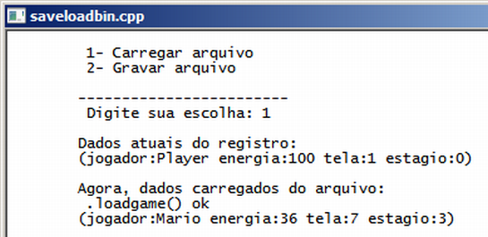

Curso completo de linguagem C++
Gameprog - Escola de programação de jogos digitais
Contato: gameprog.br@gmail.com
track21.html
21. Lendo e escrevendo em arquivos binários
21.1 Visão geral
Uma das grandes vantagens do arquivo texto é a visibilidade e a legibilidade,
isto é, você pode lê-lo e editá-lo com qualquer editor de texto. Entretanto
essa mesma vantagem é totalmente desfavorável quando há necessidade de proteger
alguma informação. Por exemplo, em nosso arquivo de savegame anterior, o jogador
poderia hackeá-lo com o simples notepad. É claro que um arquivo aberto pode
ser uma estratégia para prover maior diversão ao usuário. As desvantagens mesmo
do arquivo texto são tamanho e velocidade lenta na leitura e gravação dos
dados. Essas desvantagens podem ser resolvidas com o uso do arquivo binário.
Em resumo o arquivo binário permite esconder o conteúdo uma vez que ele não
é legível por qualquer programa, sendo apenas legível pela aplicação que
conhece o seu formato, que conhece o tipo e a disposição de seus dados.
Geralmente o arquivo é mais compacto e o processo de leitura e gravação de
dados é mais rápido e mais elaborado, você pode ter acesso direto aos registros.

// saveloadbin.cpp
// Ilustra leitura e gravaççao de arquivos binários
#include <iostream> // permite usar cin e cout
#include <fstream> // permite ler e gravar arquivos
#include <string> // vamos usar strings
#include <cstdlib> // vamos gerar valor de energia aleatório
#include <ctime> // vamos gerar valores aleatórios sempre diferentes
using namespace std;
// ****************** classe Config para dados de configuração do jogo ********
class Config {
public:
int m_fase;
int m_estagio;
int m_energia;
string m_nome;
// Nosso construtor
Config (int fase = 1, int estagio = 0, int hp = 100, string snome = "Player")
{
m_fase = fase;
m_estagio = estagio;
m_energia = hp;
m_nome = snome;
} // ::Config().end
// Mostra dados de status do jogo
void mostrar()
{
char txt[255];
sprintf (txt, "\t(jogador:%s energia:%d tela:%d estagio:%d)",
m_nome.c_str(), m_energia, m_fase, m_estagio);
cout << txt << "\n";
} // ::mostrar().end
// Resseta para os valores originais os dados de status do jogo
void reset()
{
m_fase = 1;
m_estagio = 0;
m_energia = 100;
m_nome = "Player";
} // ::reset().end
// -------------- loadgame() - carrega dados de configuração
int loadgame() {
ifstream hfile("binfile.dat", ios::binary);
// arquivo existe?
if (!hfile) {
cout << "\t *** erro na abertura do arquivo *** \n";
hfile.close();
return -1;
} // endif
// faz a leitura dos dados
// cuidado na hora de ler a string
char temp[255];
hfile.read ( (char *) temp, 6);
m_nome.assign(temp);
hfile.read ( (char *) &m_fase, sizeof(int));
hfile.read ( (char *) &m_estagio, sizeof(int));
hfile.read ( (char *) &m_energia, sizeof(int));
cout << "\t .loadgame() ok \n";
hfile.close();
return 1;
} // ::loadgame().end
// -------------- savegame() - grava dados de configuração
int savegame() {
ofstream hfile("binfile.dat",ios::binary);
// arquivo existe?
if (!hfile) {
cout << "\t *** erro na abertura do arquivo *** \n";
hfile.close();
return -1;
} // endif
// Salvando os dados - repare no cuidado da gravação da string
// A string Mario ocupa 5 letras + um byte para a marca de fim de string
hfile.write ( m_nome.c_str(), m_nome.size()+1);
hfile.write ( (char *) &m_fase, sizeof(int));
hfile.write ( (char *) &m_estagio, sizeof(int));
hfile.write ( (char *) &m_energia, sizeof(int));
cout << "\t .savegame() ok \n";
hfile.close();
return 1;
} // ::savegame().end
}; // fim da classe config
// --------------------------------------------------------------------------
// Protótipo das nossas funções básicas
int menu();
// -------------------- inicio da função principal ---------------------------
int main() {
system("color f0"); system("title saveloadbin.cpp"); cout << "\n";
int nEscolha;
const int carregar = 1;
const int gravar = 2;
int sts = 0;
Config jogo_situacao (7,3,45, "Mario");
// gera um valor aleatório na faixa 0-100 diferente a cada execução do programa
srand (time(0));
jogo_situacao.m_energia = rand() % 100;
nEscolha = menu();
if ( nEscolha == gravar) {
sts = jogo_situacao.savegame();
jogo_situacao.mostrar();
} // endif gravando dados no disco
if ( nEscolha == carregar) {
jogo_situacao.reset();
cout << "\n\tDados atuais do registro: \n";
jogo_situacao.mostrar();
cout << "\n\tAgora, dados carregados do arquivo: \n";
sts = jogo_situacao.loadgame();
jogo_situacao.mostrar();
} // endif carregando dados do disco
cout << "\n"; system("pause");
} // endmain
// ************ Implementação das funções declaradas *************************
// --------------- n = menu() gera um menu de escolhas -----------------------
int menu() {
int nEscolha = 0;
string txt_carregar = "\t 1- Carregar arquivo \n";
string txt_gravar = "\t 2- Gravar arquivo \n";
string txt_escolher = "\n\t------------------------ \n\t Digite sua escolha: ";
cout << txt_carregar;
cout << txt_gravar;
cout << txt_escolher;
cin >> nEscolha;
return nEscolha;
} // fim da funcao menu()
Abertura do arquivo binário para leitura e gravação
ifstream hfile("binfile.dat", ios::binary); // leitura
ofstream hfile("binfile.dat", ios::binary); // gravação
Perceba no código acima que para abrir um arquivo no modo binário você
precisa apenas passar o argumento ios::binary para o contrutor das
classes ifstream/ofstream ou no método .open().
Lendo e gravando os dados no arquivo binário
O processo de leitura e gravação de dados é mais trabalhoso e exige um pouco
mais de cuidado: para gravação, você precisa passar para o método .write()
do objeto da classe ofstream um ponteiro (char *) para o item que será gravado
e o tamanho em bytes desse item: ofstream.write ( char *dado, int nTamanho);
hfile.write ( (char *) &m_fase, sizeof(int));
Note que aplicamos um cast tranformando a propriedade inteira m_fase em um
ponteiro ((char *)) e passando para esse ponteiro o endereço de referência
(&m_fase) dessa propriedade; sizeof(int) informa o tamanho em bytes que
o tipo inteiro ocupa de memória.
O procedimento de leitura é semelhante, vai um ponteiro de memória com a
referência de endereço para guardar o dado e o tamanho desse dado:
ifstream.read ( char *dado, int nTamanho);
hfile.read ( (char *) &m_fase, sizeof(int));
Cuidado na gravação e leitura do tipo c-string
De forma geral o tipo de dado c-string geralmente se apresenta como uma
array de dados do tipo char (char *), e essa array de dados contém um
byte a mais para armazenar a marca de final de string, o byte zero:
// cuidado na hora de ler a string
char temp[255]; // c-string temporária
hfile.read ( (char *) temp, 6); // A string lida 'Mario' tem 6 bytes de tamanho!
m_nome.assign(temp); // Joga a c-string na string c++
// Salvando os dados - repare no cuidado da gravacao da string
// A string Mario ocupa 5 letras + um byte para a marca de fim de string
hfile.write ( m_nome.c_str(), m_nome.size()+1);